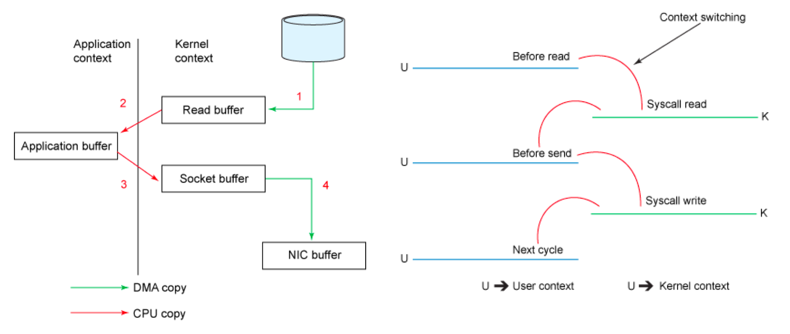
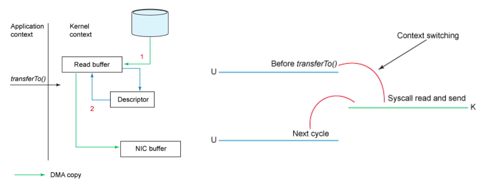

Ch04-Kafka 之 ZeroCopy
June 29, 2018
Kafka 中存在大量的网络数据持久化到磁盘（Producer 到 Broker）和磁盘文件通过网络发送（Broker 到 Consumer）的过程。这一过程的性能直接影响 Kafka 的整体吞吐量，于是 Kafka 便引入了 ZeroCopy 技术来提升性能。
java.nio.channels.FileChannel 的 transferTo() 方法允许字节从源通道传输到接收通道，而不需要将应用程序作为传输中介。这便是 ZeroCopy 的核心代码。
1. 传统方式磁盘到网络处理过程 #
传统的方式是将源通道读入字节缓冲区，然后作为两个独立的操作写入接收器通道：
File.read(fileDesc, buf, len);
Socket.send(socket, buf, len);
要完成将数据从磁盘读取出来，然后通过网络发送出去，传统方式为了完成此步骤，会在用户态和内核态之间进行四次上下文切换，并且在操作完成之前会复制四次数据。

如上作图所示，复制分为 4 次。
- 首先通过系统调用将文件数据读入到内核态 Buffer（DMA 拷贝）。
- 然后应用程序将内存态 Buffer 数据读入到用户态 Buffer（CPU 拷贝）。
- 接着用户程序通过 Socket 发送数据时将用户态 Buffer 数据拷贝到内核态 Buffer（CPU 拷贝）。
- 最后通过 DMA 拷贝将数据拷贝到 NIC Buffer。
2. ZeroCopy 方式磁盘到网络处理过程 #

Linux 2.4+内核通过 sendfile 系统调用，提供了零拷贝。数据通过 DMA 拷贝到内核态 Buffer 后，直接通过 DMA 拷贝到 NIC Buffer，无需 CPU 拷贝。除了减少数据拷贝外，因为整个读文件 - 网络发送由一个 sendfile 调用完成，整个过程只有两次上下文切换，因此大大提高了性能。
@Overridepublic
long transferFrom(FileChannel fileChannel, long position, long count) throws IOException {
return fileChannel.transferTo(position, count, socketChannel);
}
transferTo 和 transferFrom 并不保证一定能使用零拷贝。实际上是否能使用零拷贝与操作系统相关，如果操作系统提供 sendfile 这样的零拷贝系统调用，则这两个方法会通过这样的系统调用充分利用零拷贝的优势，否则并不能通过这两个方法本身实现零拷贝。